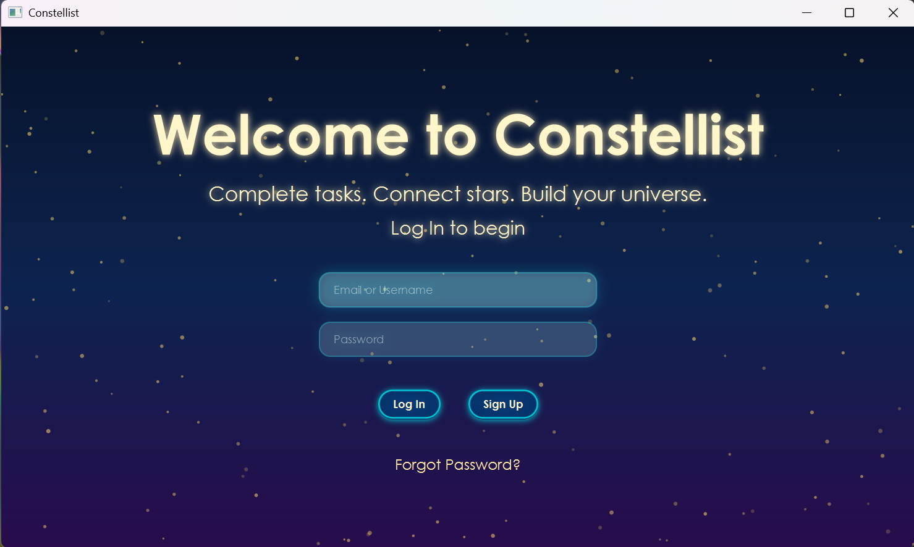
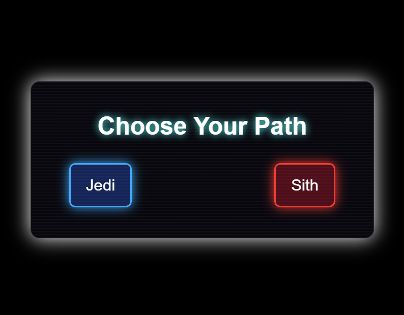
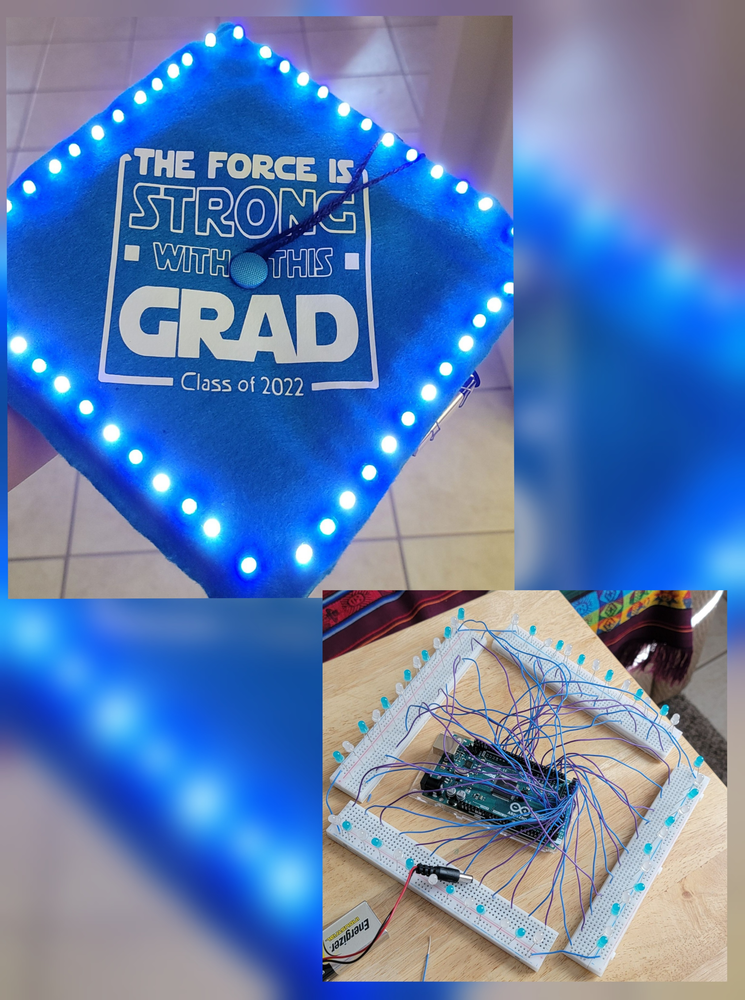

My Projects

Constellate
A JavaFX task management application featuring a constellation themed interface with SQLite database integration. Designed with a focus on user experience, data storage, and modular software structure.

ForcePath
Interactive Star Wars inspired application built with HTML, CSS, and JavaScript. Users navigate character paths while exploring dynamic styling, theme design, and responsive layout techniques.

Arduino Grad Cap
A custom Arduino based LED lighting system integrated into my high school graduation cap. Programmed with C++ to create dynamic lighting patterns. Project involved circuit design, wiring, power management, and debugging for stable performance.